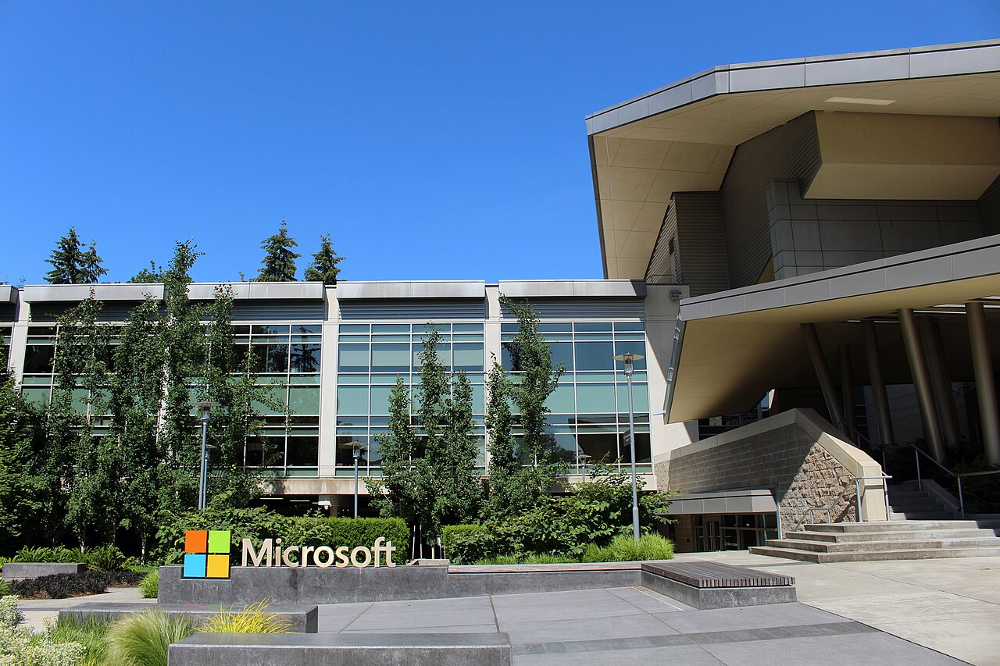

Record profit at Microsoft, as data-center spending cuts free cash flow


Microsoft's revenue grew 17.8% to $331.8 billion in fiscal 2026, its fastest growth since fiscal 2022, and its operating margin reached 46.8%, the highest of the eight years covered here. Cash spent on property and equipment rose 80% to $115.9 billion. That left free cash flow at $67.0 billion, down for a second year even though operating cash flow grew by a third.
Growth picked up and operating margin kept widening
Revenue growth accelerated to 17.8% after 15.7% in fiscal 2024 and 14.9% in fiscal 2025. Over seven years revenue has grown 2.6 times, from $125.8 billion in fiscal 2019, a compound rate of 14.9% a year.
Operating margin rose for a third straight year, from 34.1% in fiscal 2019 to 46.8%. Operating expenses grew more slowly than revenue: research and development was 10.7% of revenue in fiscal 2026, against 13.4% in fiscal 2019. Gross margin moved the other way. It fell for a second year, from 69.8% in fiscal 2024 to 67.9%, because cost of revenue, which includes the cost of running Microsoft's data centers, grew 21.1% against revenue growth of 17.8%.
OpenAI lifted net income
Net income rose 31.3% to $133.7 billion and diluted earnings per share rose 31.6% to $17.95. Part of that came from outside the operating business. Other income swung from a $4.9 billion loss in fiscal 2025 to a $10.7 billion gain. Microsoft's earnings release says net gains on its investments in OpenAI added $4,963 million to fiscal 2026 net income ($0.67 per share), after losses on the same investments reduced fiscal 2025 net income by $3,620 million ($0.49 per share).
Excluding both years' OpenAI effects, net income rose 22.1%, close to the 20.8% growth in operating income. The effective tax rate was 19.4%.
Capital spending now takes most of the operating cash
Cash from operations rose 34.4% to $182.9 billion. Additions to property and equipment rose faster, by 79.6% to $115.9 billion, which is 4.1 times the fiscal 2023 figure. Capital spending absorbed 63% of operating cash flow, compared with 27% in fiscal 2019 and 32% in fiscal 2023.
Free cash flow fell from $74.1 billion in fiscal 2024 to $71.6 billion and then $67.0 billion. As a share of revenue it dropped to 20.2%, from a range of 28% to 33% between fiscal 2019 and fiscal 2023.
The balance sheet is turning into property
Property and equipment, net of depreciation, reached $313.1 billion in June 2026. That is 3.3 times the June 2023 level and 8.6 times June 2019, and equal to 71% of shareholders' equity, up from 36% in 2019.
Cash and short-term investments of $76.8 billion still exceed total debt of $40.3 billion, down from $72.2 billion in 2019. Counting finance lease liabilities as debt, Microsoft had $30.0 billion more debt than cash at June 2026. A year earlier the same measure showed $5.2 billion more cash than debt. It had also been negative at June 2024, by $3.2 billion, when Microsoft carried short-term borrowings as well as long-term debt. In 2019 it showed $55.1 billion more cash than debt.
Payouts to shareholders rose again
Microsoft paid $26.4 billion in dividends, up 9.8%, and spent $22.3 billion buying back shares. Together that is $48.7 billion, or 73% of free cash flow, up from 59% in fiscal 2025. The diluted share count fell 0.2% during the year to 7,453 million, and 3.9% since fiscal 2019.
Eight years of figures
How this report was made
- All financial figures come from Microsoft's annual reports on Form 10-K, taken from the SEC's EDGAR structured data (XBRL) for Microsoft, CIK 0000789019.
- The OpenAI adjustments come from Microsoft's earnings release for the fourth quarter of fiscal 2026, filed with the SEC as Exhibit 99.1 to a Form 8-K.
- Free cash flow is net cash from operations minus additions to property and equipment. Capital spending means additions to property and equipment. Total debt is long-term debt, including the current portion, plus short-term borrowings such as commercial paper.
- Updated October 6, 2026: debt now includes short-term borrowings, as on the site's company pages. This raised debt at June 2024, when Microsoft had short-term borrowings, and changed the comparison of cash with debt and leases for that year and, by rounding, for 2019.
- This report does not cover the share price, valuation or analyst forecasts.
- More figures for Microsoft are on its company data page.
Sources: Form 10-K (SEC EDGAR) · Form 10-K filing index · EDGAR company facts for Microsoft · Microsoft fiscal 2026 fourth-quarter earnings release (Exhibit 99.1)